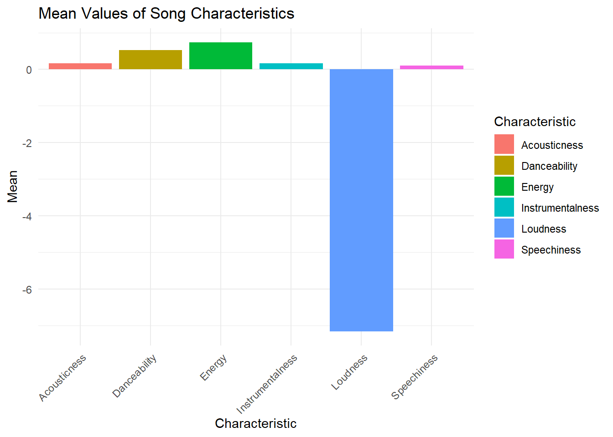

data <- read.csv('playlist.csv')My Taste is Still Better than Yours
Additions
- I wanted to add more of the code to my website in case anyone wanted to look more into my work as to how we figured out that I have the best taste
- I’ll also leave the slide info for context I (what do i do)
Code
data <- data[-c(1,2,6, 9,14,16)]
head(data) Track.Name Album.Name Artist.Name.s.
1 Brianstorm Favourite Worst Nightmare Arctic Monkeys
2 D Is For Dangerous Favourite Worst Nightmare Arctic Monkeys
3 Altered Beast I Murder of the Universe King Gizzard & The Lizard Wizard
4 Teddy Picker Favourite Worst Nightmare Arctic Monkeys
5 Old Yellow Bricks Favourite Worst Nightmare Arctic Monkeys
6 Is This It Is This It The Strokes
Duration..ms. Popularity Added.At
1 170226 0 2017-11-14T20:35:49Z
2 136106 0 2017-11-14T20:35:49Z
3 143853 33 2021-10-13T20:58:21Z
4 163173 0 2017-11-14T20:35:49Z
5 191200 0 2017-11-14T20:35:49Z
6 151333 61 2017-11-14T20:35:49Z
Genres Danceability
1 garage rock,modern rock,permanent wave,rock,sheffield indie 0.422
2 garage rock,modern rock,permanent wave,rock,sheffield indie 0.555
3 australian psych,double drumming,microtonal,neo-psychedelic 0.399
4 garage rock,modern rock,permanent wave,rock,sheffield indie 0.631
5 garage rock,modern rock,permanent wave,rock,sheffield indie 0.665
6 alternative rock,garage rock,modern rock,permanent wave,rock 0.667
Energy Loudness Speechiness Acousticness Instrumentalness Liveness Valence
1 0.983 -4.105 0.2260 7.75e-05 2.17e-03 0.2550 0.402
2 0.926 -4.685 0.0370 9.78e-06 1.34e-04 0.0808 0.765
3 0.915 -3.656 0.0956 3.28e-03 3.00e-02 0.4080 0.303
4 0.975 -3.296 0.0974 3.72e-04 1.92e-04 0.0734 0.794
5 0.840 -4.346 0.0693 1.70e-04 1.32e-05 0.0862 0.728
6 0.692 -8.361 0.0285 1.47e-01 3.75e-05 0.3490 0.846
Tempo Time.Signature
1 165.224 4
2 145.044 4
3 103.307 3
4 150.236 4
5 135.141 4
6 96.022 4library(dplyr)Warning: package 'dplyr' was built under R version 4.2.3
Attaching package: 'dplyr'The following objects are masked from 'package:stats':
filter, lagThe following objects are masked from 'package:base':
intersect, setdiff, setequal, unionartist_counts <- data %>%
group_by(Artist.Name.s.) %>%
summarise(count = n()) %>%
arrange(desc(count))top_5_artists <- head(artist_counts, 5)
print(top_5_artists)# A tibble: 5 × 2
Artist.Name.s. count
<chr> <int>
1 King Gizzard & The Lizard Wizard 130
2 Arctic Monkeys 54
3 The Hives 46
4 The Strokes 41
5 IDLES 39
Warning
Some of these bands are too good! Listen at your own risk!
# Length Averages
#| echo: false
aveLength <- (mean(data$Duration..ms.) /1000)
aveLength
longest_song <- max(data$Duration..ms., na.rm = TRUE)
longest_song/1000
max_index <- which.max(data$Duration..ms.)
max_row <- data[max_index, ]
print(max_row)
aveTemp <- mean(data$Tempo,na.rm = TRUE)
aveTemp#| echo: false
genres_split <- strsplit(data$Genres, split = ",")
genres_vector <- unlist(genres_split)
genres_freq <- table(genres_vector)
print(genres_freq)
sorted_genres <- sort(genres_freq, decreasing = TRUE)
most_frequent_genre <- names(sorted_genres)[1]
print(most_frequent_genre)More Fun Facts About my Great Taste
- The average song length on my playlist is 3 minutes and 38 seconds
- The longest song is 18 minutes and 18 seconds, The Dripping Tap by King Gizzard and the Lizard Wizard
- My most common genre is… drumroll please…
- Rock…
- Ignore that my average tempo is 125 bpm
Spotify Analytics
- Spotify tracks qualities of music and gives them a rating
- Things like loudness, energy, danceability, etc.
- This is the data they use to create Spotify Wrapped materials at the end of the year
- Lets take some averages and see what makes a great playlist which I obviously have
dance <- mean(data$Danceability, na.rm = TRUE)
loud <- mean(data$Loudness, na.rm = TRUE)
energy <- mean(data$Energy, na.rm = TRUE)
speechiness <- mean(data$Speechiness, na.rm = TRUE)
acoustic <- mean(data$Acousticness, na.rm = TRUE)
instrumental <- mean(data$Instrumentalness, na.rm = TRUE)Constructing Analytics Barplot
means_data <- data.frame(
Characteristic = c("Danceability", "Loudness", "Energy", "Speechiness", "Acousticness", "Instrumentalness"),
Mean = c(dance, loud, energy, speechiness, acoustic, instrumental)
)| Characteristics | Averages |
|---|---|
| Danceability | 0.52427614 |
| Loudness | -7.15420963 |
| Energy | 0.72793411 |
| Speechiness | 0.09737453 |
| Acousticness | 0.16400645 |
| Instrumentalness | 0.16562125 |
Graph of Most Important Qualaties
Code
library(ggplot2)
ggplot(means_data, aes(x = Characteristic, y = Mean, fill = Characteristic)) +
geom_bar(stat = "identity") +
theme_minimal() +
labs(title = "Mean Values of Song Characteristics",
x = "Characteristic",
y = "Mean") +
theme(axis.text.x = element_text(angle = 45, hjust = 1))
To learn more about Quarto websites visit https://quarto.org/docs/websites.